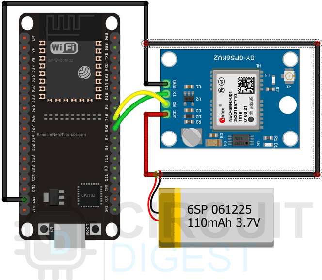

Project Overview
A custom GPS telemetry device featuring an ESP32 paired with the NEO-M9N GPS breakout module. DragLite is a vehicle acceleration performance tracker for the avid car enthusiast, actively tracking acceleration times throughout performance testing and displaying key metrics on an OLED screen. This documentation will guide you through the project's features, components, implementation, results, and final evaluation. \n
Project Timeline
Outline the key phases and milestones of the project:
- Project Kickoff: [Insert Date]
- System Design Phase: [Insert Date]
- Implementation Phase: [Insert Date]
- Testing Phase: [Insert Date]
- Project Completion: [Insert Date]
System Design
This section details the architecture and components selection for the DragLite system:
- ESP32 Microcontroller: Chosen for its low power consumption and robust wireless connectivity.
- GPS Module: Utilized for real-time position tracking.
- Accelerometer: Measures the vehicle’s acceleration.
- OLED Screen: Displays acceleration data and other relevant metrics.
Components
- ESP32 Microcontroller
- GPS Module
- Accelerometer
- OLED Screen
- Connecting Wires and Breadboard
- Power Supply
Implementation
This section covers the development and integration of all hardware and software components:
- Hardware Integration: Assembled the ESP32, GPS module, and accelerometer onto a custom PCB.
- Firmware Development: Programmed the ESP32 to process data from the GPS and accelerometer, and display it on the OLED screen.
- Testing and Debugging: Conducted multiple rounds of testing to ensure accurate data processing and display.
Results and Evaluation
Here, the performance and effectiveness of the DragLite system are evaluated:
- Performance Metrics: Evaluated the accuracy of the acceleration data and responsiveness of the system.
- User Feedback: Collected feedback from initial users to refine the system.
- Final Outcome: The DragLite system met all project objectives, with real-time data tracking and display functioning as intended.